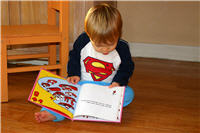

Las escuelas matan la creatividad: Ken Robinson en TED 2006
¿Es tan importante la habilidad académica?
Vivimos en un mundo donde tener conocimientos, y sobre todo, tener algún tipo de documento que diga que los tenemos, es fundamental. Gran parte de nuestra vida está dictada por nuestro currículum, y éste a su vez, por nuestra eficacia en la escuela.
Sin embargo la importancia concedida a la educación formal no se debe tanto a la apreciación del conocimiento por sí mismo, sino más bien a que nuestra sociedad está orientada a la eficiencia, la competitividad, la productividad y a la ganancia. Lo que no es considerado útil no tiene valor, así que los conocimientos deben ser herramientas útiles, si no lo son, su valor es poco.
Y con valor me refiero a la apreciación social que se le da a una habilidad o a una actividad, y por extensión a las personas que las tienen o las practican.
Creo que la charla que verán a continuación tiene mucho que ver con la perspectiva estrecha que nuestra sociedad tiene sobre lo que es valioso, sobre lo que es útil. No se trata sólo de la educación y de los niños, se trata de todo nuestro mundo de expectativas y metas, se trata de nosotros.
Y es que el problema no es sólo cómo se califica en el aula, es cómo nos calificamos a nosotros mismos y a otros fuera de ella.
Creatividad, expectativas sociales y la educación
La siguiente charla quizás sea la conferencia TED más popular a la fecha, y más allá de la crítica al modelo educativo mundial que plantea, me parece que tiene que ver con un fenómeno mucho más amplio que las escuelas.
¿Qué es lo que valora nuestra sociedad? ¿Cómo calificamos a las personas: por su ocupación, por su posición social, por su poder, por su prestigio, etc.? ¿Qué tenemos en nuestras cabezas como la imagen del éxito?
Creo que gran parte de nuestras posibles respuestas está determinada por la cultura de consumo, los modelos que proponen como deseables a la abundancia económica y material, y el énfasis (que llega a ser obsesivo) en la productividad y la eficiencia.
Todo esto se refleja en los programas escolares, en la misma matrícula y programas de estudios que ofrecen las instituciones educativas. En ocasiones ya no se trata de impartir conocimiento, y mucho menos de impulsar una formación total del ser humano, sino que el sistema completo se formula de acuerdo a cierto modelo económico donde lo humano cuenta muy poco: Lo importante es la productividad y las demandas del mercado.
Mientras el tener recursos materiales para vivir y el tratar siempre de hacer mejor las cosas tienen su importancia, las dimensiones del ser humano no deberían ser reducidas a estos factores. Y es precisamente esta reducción la que opera cuando se dejan de lado los aspectos creativos no productivos (en el sentido económico) de las personas.
Afortunadamente tales aspectos no se pueden suprimir del todo, pero no deja de ser una muestra de nuestro paradigma social que, dada la elección entre hacer lo que nos gusta y lo que nos daría más dinero, por lo general la segunda opción lleve las de ganar.
Así que creo que el sistema educativo no es tan culpable de que esa gran riqueza creativa del ser humano sea muchas veces cortada desde la niñez; es nuestro modelo económico, son nuestros ideales del éxito, es nuestra forma de medir y valorar a las personas, son las expectativas que se nos han impuesto y que nosotros mismos imponemos sobre los demás, en particular a los niños y a los jóvenes.
Los retos de nuestro tiempo son enormes, y muchos de esos colosales problemas tienen como origen precisamente ese énfasis y persecución de la productividad, la eficiencia y la ganancia máximas. Y si no me equivoco, ese énfasis no nos ha funcionado muy bien hasta ahora.
Pienso que el reto no es tanto revolucionar el modelo educativo, sino más bien revolucionar qué es lo que consideramos valioso: El cambio del sistema educativo seguirá a tal revolución.
Una nota al margen:
Esta conferencia fue una de las dos charlas TED que, en julio del 2008, empecé a traducir cuando iniciaba este proyecto. Por alguna razón, la otra charla (Benjamín Zander: Con los ojos brillantes) se publicó unas semanas después, mientras que ésta se quedó esperando durante meses en un rincón del disco duro. Hoy me pongo al día con una publicación por demasiado tiempo postergada 
El ponente
 Sir Ken Robinson es reconocido a nivel mundial como un experto en creatividad y educación. Nacido en Liverpool, Inglaterra y en una familia de clase trabajadora con siete hijos, Ken Robinson contrajo polio a la edad de 4 años, siendo decisivo el apoyo de sus padres para que completara su educación y no permitiera que su discapacidad lo definiera como persona.
Sir Ken Robinson es reconocido a nivel mundial como un experto en creatividad y educación. Nacido en Liverpool, Inglaterra y en una familia de clase trabajadora con siete hijos, Ken Robinson contrajo polio a la edad de 4 años, siendo decisivo el apoyo de sus padres para que completara su educación y no permitiera que su discapacidad lo definiera como persona.
Obtuvo el grado de Doctor por la Universidad de Londres por su investigación sobre el drama y el teatro en la educación, y gran parte de su trabajo se ha enfocado a investigar la importancia del arte en la educación formal.
Ha colaborado de forma decisiva en iniciativas enfocadas a introducir el arte y la cultura en los programas educativos de la Gran Bretaña y de Europa. Por sus logros investigando sobre la creatividad, la educación y el arte, fue nombrado caballero en junio de 2003.
A la fecha ha publicado 3 libros, el último de los cuales es mencionado en la charla y que fue publicado en enero de 2009 (no disponible en español) bajo el título «The Element» (enlace en Amazon); dicha obra tiene como objetivo ayudarnos a encontrar ese punto donde nuestros talentos naturales coinciden con nuestra pasión, basándose en la idea de que todos tenemos un potencial increíble a la espera de ser descubierto.
Las escuelas matan la creatividad
Descubre tu talento y tu pasión.
[Charla completa en YouTube por cortesía de Keny.]
*Descarga la conferencia (640×480): Parte 1 Parte 2
Video: Xvid, audio: mp3, tipo: AVI, tamaño: 178MB.
>> Compatible con reproductores certificados DivX.
Descarga las partes a la misma carpeta y descomprime con WinRar.
Traducción y subtítulos: Ajmme Kajros
En TED: Ken Robinson says schools kill creativity
*Video subtitulado y distribuido bajo los términos de uso de TED Conferences LLC.
Metadatos y acciones
 Temas: arte, cultura, desarrollo personal, educación, inspiracion, tedtalk, video ⋅
Para guardar: Enlace permanente a esta anotación.
Temas: arte, cultura, desarrollo personal, educación, inspiracion, tedtalk, video ⋅
Para guardar: Enlace permanente a esta anotación.
 Print This Post
Print This Post
Comentarios
Los comentarios están cerrados.
Categorías
Últimas 4 anotaciones
Últimas anotaciones en cada categoría

Divulgación
El dinero no fomenta la creatividad: Daniel Pink en TEDGlobal 2009

Inspiración
Los 30 no son los nuevos 20

Noticias
Ver tu mente en tiempo real: Christopher deCharms en TED 2008
![Música en la era digital [Animación]](../../../wp-content/themes/tma/images/featured/animation_04_2009_featured.jpg)
Ocio
Música en la era digital [Animación]
agosto 2, 2009, 7:53 pm
Información Bitacoras.com…
Valora en Bitacoras.com: ¿Es tan importante la habilidad académica? Vivimos en un mundo donde tener conocimientos, y sobre todo, tener algún tipo de documento que diga que los tenemos, es fundamental. Gran parte de nuestra vida está dictada por nue…
agosto 16, 2009, 3:56 am
Dos comentarios:
Cuando dices “nuestra sociedad está orientada a la eficiencia, la competitividad, la productividad y a la ganancia”, ten en cuenta que en las economías occidentales eso sólo es verdad a medias, ya que aproximadamente la mitad del PIB es gestionada por el sector público, que no tiene precisamente el foco en esos valores…
Y por otro lado, tener el foco en esos valores permite asegurar un nivel de vida en el cual las necesidades, básicas y más sofisticadas, están cubiertas y uno se puede preocupar de perseguir valores más “humanos”
agosto 16, 2009, 12:15 pm
Lucas:
Tienes razón en ambos puntos, importantes sectores de la sociedad no tienen esos objetivos, aunque mucho de nuestro estilo de vida actual tiene su origen en ellos. Agregaría que muchas personas y organizaciones no gubernamentales se mueven bajo principios de altruismo y cooperación, y que creo que los valores de eficiencia, competitividad y ganancia lejos de ser indeseables, son útiles, pero nada más.
En esa frase, por “nuestra sociedad está orientada” me refiero a que en nuestra sociedad estos valores tienen una prioridad muy alta, y son reforzados de muchas maneras. No se habla tanto de creatividad, altruísmo, o el valor intrínseco de hacer las cosas, como se habla de ganancias económicas, triunfar sobre competidores y producir. En ese sentido creo que esa orientación existe.
Por otro lado creo que es posible tener un buen nivel de vida sin que estos valores sean los predominantes, sí hay que darles su lugar, pero no tienen que estar hasta arriba. Ha habido otras épocas donde la humanidad ha sobrevivido sin darles esa importancia. No hablo de regresión a esas épocas (que no siempre fueron buenas), sino a encontrar otros valores menos extrínsecos que los actuales.
agosto 23, 2009, 9:48 am
Pero mi pregunta es: ¿para que sirven estas conferencia?, ¿producen algún efecto?, ¿están dirigidas, por ejemplo está, a los ministros de educación?, ¿hay algún compromiso por parte del gobierno de cambiar los planes de estudio según ésto?.
Opino que la escuelas no matan sólo la creatividad, sino que matán al espíritu del niño haciéndolo una pieza más del engranaje.
Hay personalidades muy importantes como Roger Schank profesor de Yale que dice que las escuelas no deberían existir:
http://kindsein.com/es/21/1/485/
Pero por mucho que lo digan expertos siempre van a existir al igual que la delincuencia y las guerras porque los gobiernos los necesitan.
Los escuelas hacen creer al 99% de los niños que no valen para nada y eso es una muerte en vida.
agosto 23, 2009, 6:06 pm
http://www.youtube.com/watch?v=k7-ALBb46WI creo que hay que vigilar muy de cerca el desarrollo de la nueva inteligencia
agosto 27, 2009, 4:55 pm
Pienso que el Arte abre la mente y es la escuela de la creativida!
agosto 27, 2009, 6:51 pm
¡Ojo!, pero que nadie confunda. La introducción del arte en las escuelas no consiste en saberse todos los cuadros de Da Vinci, Picasso, la vida de éstos, las composiciones de Mozart, su vida y sus amoríos. Eso es lo que se ha hecho siempre. Se trata de “expresión artistica”: aprender a hacer música, a dibujar, pintar. Licenciados en Historia del Arte que ni saben tocar instrumentaos, ni pintan, ni nada. ¡Qué curioso!
septiembre 10, 2009, 11:21 am
Muchísimas gracias por la información.
Me tomé el atrevimiento de publicar este mismo artículo un poco mas resumido en mi Blog.
Sobra decir que puse un link directo a este blog.
septiembre 10, 2009, 7:45 pm
@Camilo: Gracias a ti por la visita y el comentario.
No hay ningún problema, la idea es difundir ideas lo más posible ^_^ Saludos.
septiembre 23, 2009, 8:58 am
Enhorabuena y gracias por tu blog y particularmente por este artículo y el video.
Adjunto enlace con la web sobre Iván Illich donde entre otros pueden encontrar el libro “La sociedad desescolarizada”, y que tiene relación con todo lo anterior: http://www.ivanillich.org.mx/Principal.htm
“Sembremos semillas y sembremos ideas. De las primeras algunas quedarán; de las segundas permanecerán siempre las buenas…” Francisco González. Díaz.
Salud/os
septiembre 23, 2009, 4:52 pm
[...] Fuente: ANAMNESIS [...]
febrero 18, 2010, 10:20 pm
Estoy convencido de que unsa sociedad mejor educada es mas sensible a valorar las artes. Ser artista es ser sensible receptor de un mundo mas humano.
junio 16, 2010, 9:35 am
Estoy cursando el profesorado de Educacion Primaria y en el Instituto (Manuel Belgrano)donde curso, hemos visto la charla en clace de Arte y Educacion… creo que tienes mucha razon en lo que dices y trabajamos mucho con ello. Saludos.
agosto 4, 2010, 7:46 pm
Me encanta este vídeo, he añadido tu artículo resumido en mi blog.
¡Muchas Gracias!
septiembre 2, 2010, 6:40 am
me ha parecido excelente la conferencia. qué bien saben expresar las ideas los americanos! son auténticos expertos en el arte del discurso.
acerca de las ideas que transmite, estoy absolutamente de acuerdo. y me parece fundamental a la hora de plantearse la educación en las aulas, pero también en los hogares.
acabo de descubrir este blog, pero creo que estaré alerta a lo que sea publicado.
gracias,
octubre 20, 2010, 11:26 am
Excelente! Me emocioné al escucharlo…Refuerza tanto mis ideas…hace tiempo que hablo de la Ed por el Arte..y piensan que quiero que todos sean artistas..!
Expresar las emociones, los sentimientos, las percepciones con pasión es llegar a la libertad …
Eso en un cuerpo con salud,con una mente que desarrolla su inteligencia, que ejercita su razonamiento, lleva al ser humano a una evolución íntegra…Completa…
Agradezco al Dios haberme permitido conocer a Ken Robinson…
octubre 25, 2010, 8:38 am
Que excelente blog
diciembre 18, 2010, 9:24 pm
Sinceramente para entender lo que dice Sir Ken Robinson hay que analizar la realidad tan triste desde el enfoque académico que las escuelas en muchos casos hacen…con excepciones muy loables de proyectos educativos donde se contempla a las Artes como una necesidad, salvo esta el resto esta llevando a la sociedad hacia un lugar desértico y sombrío de infelicidad pero lleno de ÉXITO sobre todo el económico…destruyendo el planeta con mas empresas que devastan los bosques, la naturaleza y muchos elementos que solo sirven para obtener ÉXITO económico.
Lo que sucede en el planeta (calentamiento) no es una argumento de una película de Roland Emmerich…es la cruda realidad que solo una reformulación de objetivos de metas…visión…lo que se necesita para nuestra sociedad va a ayudarnos.
En fin la sensibilización de la humanidad es una necesidad inapelable.
junio 18, 2011, 8:33 pm
[...] por Ajmme KajrosSu Blog:http://ajmmekajros.com/anamnesisDescarga compatible con reproductores DivX:http://ajmmekajros.com/anamnesis/index.php?p=372#descargaVideo redistribuido y subtitulado en español bajo las políticas de uso de TEDTalks [...]
septiembre 8, 2011, 2:14 pm
[...] Descarga compatible con reproductores DivX: http://ajmmekajros.com/anamnesis/index.php?p=372#descarga [...]
noviembre 13, 2011, 12:03 pm
Hola a todas,todos,informacion,por algo estamos leyendo esto,pensando positivamente,el cambio,la nueva era,todo se relaciona,transicion picis – acuario,amanecer galactico,vibracion indigo,ficica cuantica,ley de atraccion,etc,en la musica,especificamente en los intrumentos de cuerda frotada,(violin,etc),la culpa que genero y genera la vieja estructura,cientos de años,perdiendo la intencion y la atencion,50 por ciento ,por lo menos,en le afinacion de dichos intrumentos…cosa que es imposible de lograr inmediatamente,disociando dicha afinacion del resto,muuuchas cosas que podemos cambiar “ahora”,utilizando el cien por ciento de la energia en estos propositos de logro inmediato.Los impulsos electricos que recibe el oido como “error”,son chirlos para las manos…ni hablar de la creatividad…Gracias F. Rabath,mi maestro de contrabajo.Luz y amor para todos.
agosto 19, 2012, 7:15 pm
[...] todos tenemos un potencial increíble a la espera de ser descubierto. (Biografía extraída de: Anamnesis. Ideas para entender y transformar al mundo) Cuando vi este vídeo recordé tanto al inolvidable maestro Facundo Cabral, ese [...]